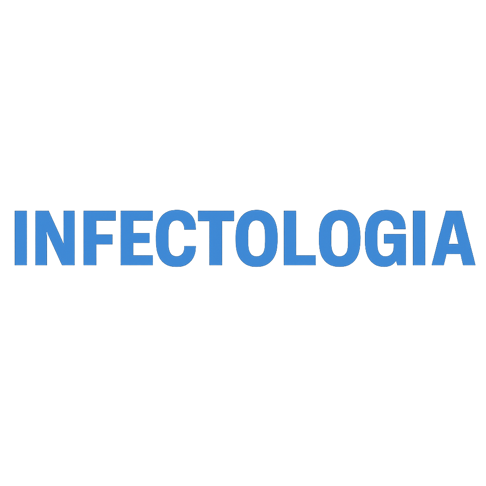

Hospitais referência em infectologia:
- Hospital Universitário Lauro Wanderley (HULW): - É uma referência para diversas especialidades, incluindo o tratamento de HIV/AIDS, especialmente no contexto materno-infantil e na prevenção da transmissão vertical.
Também é uma unidade de dispensação de medicação antirretroviral, como hospital universitário, geralmente atende casos complexos e possui ambulatórios especializados.
- Complexo Hospitalar Clementino Fraga: - Este é, sem dúvida, o principal hospital de referência para doenças infectocontagiosas na Paraíba. As buscas confirmam seu nome (Complexo de Doenças Infecto Contagiosas Clementino Fraga) e sua atuação no tratamento de doenças infecciosas.
É referência para tratamento de HIV/AIDS, incluindo dispensação de medicação antirretroviral e atendimento a casos novos.
Possui leitos SUS para infectologia.